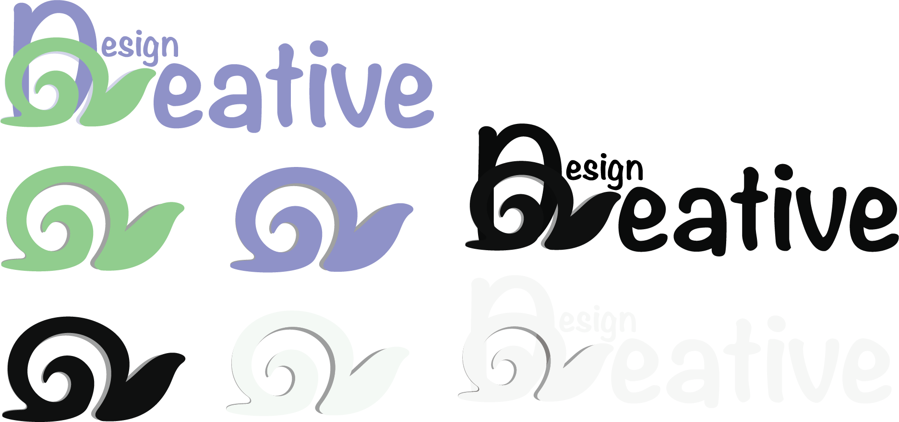
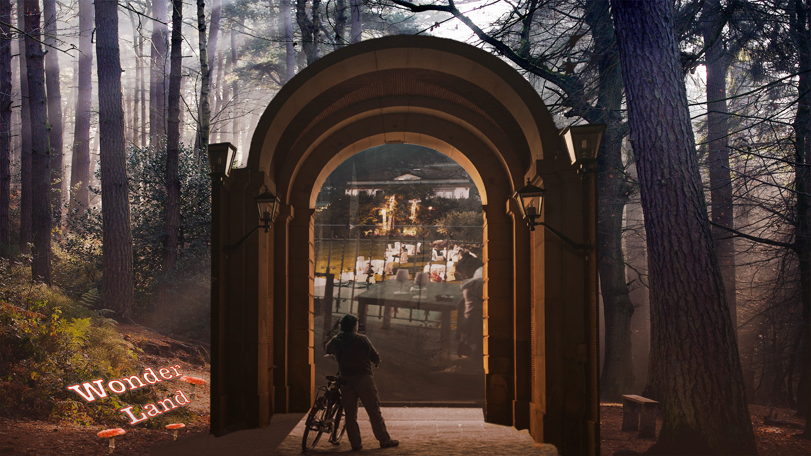

Projects
Having almost finished my first year of the Interactive Design Program at SAIT, some of my favourite projects that I have worked on have been in Web Communications, including this site that I will continue to use to build my portfolio.
Logo created as part of a Creative Brief for a fictional company:
Photo Composites created in Photoshop:

Click below to hear an ad